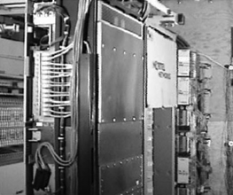
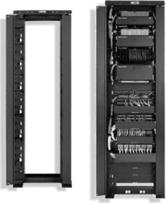
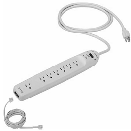

Documentació dels procediments de configuració
Fins ara hem après les tecnologies i conceptes de les capes del model OSI i el flux de dades que hi ha entre elles. El pas següent serà, doncs, començar a dissenyar xarxes.
En el disseny d’una xarxa hi intervenen molts factors; per exemple, hem d’escollir la tecnologia que farem servir, la topologia física, la topologia lògica, els tipus de mitjà de transport de les dades, etc. I el que és més important, ens hem de conscienciar de la importància de disposar d’una bona documentació, és a dir, de tenir tots els plànols.
Fases preliminars per la configuració d'una xarxa
Perquè una xarxa sigui efectiva i respongui a les necessitats del client, primer hem de conèixer realment què necessita el client, no el que a nosaltres ens sembla que necessita. Els passos que hem de seguir són els següents:
1. El primer pas serà recopilar informació sobre l’organització de l’empresa on hem d’instal·lar la xarxa. Per dur a terme aquest procés de recopilació d’informació, haurem de preparar un qüestionari que hauria d’incloure preguntes sobre el següent:
- Història i estat de l’organització
- Creixement projectat
- Polítiques de funcionament i d’administració
- Sistemes i procediments del client
- Opinions de les persones que utilitzaran la xarxa
Aquesta informació ens servirà per situar-nos sobre què fan i com ho fan.
2. El segon pas consisteix a analitzar detalladament i valorar els requisits actuals i projectats de les persones que utilitzaran la xarxa.
3. El tercer pas serà identificar els recursos i restriccions que té l’organització. Hem de conèixer de quins pressupostos disposem per implementar la xarxa i els recursos que hi ha ara mateix a l’organització tant de maquinari (tipus d’ordinadors, components de xarxa, etc.) com de programari (amb quin tipus de programari treballen, quins tipus d’arxius comparteixen o volen compartir amb els usuaris). També hauríem d’interessar-nos pel tipus d’usuari que farà servir la xarxa: és expert o només té coneixements d’usuari (això ens pot orientar sobre la seguretat que hem d’implementar, per exemple).
En resum, per a aquest punt hauríeu de conèixer el següent:
- Recursos financers del client.
- Com es connecten i es comparteixen aquests recursos.
- Quantes persones treballaran amb la xarxa.
- Quin és el nivell informàtic dels usuaris.
- Quin és el nivell d’acceptació dels ordinadors tenen els usuaris.
Aquests tres punts ens haurien d’ajudar a desenvolupar el pressupost per a la implementació de la xarxa. Ara passem a estudiar les fases del disseny.
Fases de la configuració
En aquest punt estudiarem els passos més importants que s’han de seguir per dissenyar una xarxa. Primer farem una ullada als recursos del procés de disseny de què disposem:
- Dissenyador: persona o grup de persones que fan el disseny.
- Client: persona o organització que sol·licita el disseny.
- Usuari: persona o grup que utilitzarà la xarxa.
- Pluja d’idees (brainstorming): generació d’idees creatives per al disseny.
- Desenvolupament d’especificacions: indicadors que mesuren el bon funcionament del disseny.
- Construcció i prova: procés per conèixer els objectius dels clients i satisfer els estàndards.
Com en tot procés d’enginyeria, hi ha molts mètodes per a la creació d’un producte i un d’ells és el cicle de resolució de problemes de la figura.
Un altre mètode per organitzar plans de disseny és la matriu de solucions: es posen totes les possibles alternatives i opcions per dissenyar la xarxa i es van enumerant els avantatges i desavantatges.
Documents de la configuració d'una xarxa
La documentació principal que ha d’acompanyar el disseny de la xarxa és la següent:
- Diari d’enginyeria: és un diari on hi ha tots els informes dels treballs que es realitzen, així com resultats finals, proves, etc.
- Determinar la tecnologia que es farà servir: Ethernet, wi-fi, etc.
- Topologia física.
- Topologia lògica.
- Diagrames.
- Matriu de solucions de problemes.
- Etiquetatge de les preses de corrent.
- Etiquetatge dels cables.
- Etiquetatge dels dispositius de la xarxa -commutadors, concentradors (hubs), encaminadors, etc.- i dels ordinadors.
- Resum de les preses de corrent i dels cables instal·lats.
- Resum dels dispositius, adreces MAC i adreces IP.
Per fer els plànols, teniu una activitat al web que us explica alguns dels programes que hi ha per ajudar-vos en aquesta feina. També heu de conèixer els diferents símbols que hi ha normalitzats per identificar-los en un plànol (vegeu la figura). Una altra qüestió que heu de tenir en compte són els diferents plànols que hi ha i el que voleu representar:
- T0. Plánols del lloc o campus: recorreguts externs i xarxes troncals entre edificis.
- T1. Disposició de l’edifici complet per pis: límits, xarxes troncals i recorreguts horitzontals de la zona de servei.
- T2. Dissenys de la zona de servei: ubicacions de les derivacions i etiquetes per a cables.
- T3. Sales d’equipament per a comunicacions: vista dels plànols dels bastidors i les façanes de les parets.
- T4. Disseny detallat típic: retolació de la placa, tallafoc i característiques de seguretat.
- T5. Cronogrames (fulls de descripció del cabiatge i equipament) per a a posada en servei.
Ja coneixem els símbols normalitzats que s’han de fer servir en un plànol i els diferents tipus de plànols; doncs ara veurem com es fa la planificació estructurada del cablatge.
Planificació estructurada del cablatge
Una de les primeres decisions que hem de prendre és on situarem els recintes de cablatge, ja que és on situarem la majoria dels cables i els dispositius de xarxa (figura).
La decisió més important és on posarem el nostre MDF (armari de distribució principal) i els IDF (armaris de distribució secundaris). Per prendre aquestes decisions, haurem de tenir en compte els aspectes següents:
1. Dimensions del recinte de cablejat. La normativa TIA/EIA-568-A especifica que en una LAN Ethernet, el cablatge horitzontal s’ha de connectar a un punt central en una topologia d’estrella.
Aquest punt central és el recinte de cablatge, on hi ha d’haver la placa de connexions (patch pannel) i el commutador o el concentrador.
Aquest recinte ha de ser prou gran perquè hi càpiguen tot el cablatge i els dispositius i perquè es puguin fer ampliacions en cas que fos necessari. Per tant, la mida depèn de les dimensions de la LAN.
La TIA/EIA-569 ens diu que per a cada planta hi ha d’haver com a mínim un recinte de cablatge cada 1.000 m2 aproximadament o quan la distància del cablatge horitzontal és de més de 90 m.
2. Especificacions de l’entorn. Qualsevol espai que determinem com a recinte de cablatge ha de complir certes especificacions; les més importants tenen a veure amb les condicions de l’espai -la calefacció, la ventilació, etc.-, de les preses de corrent i de l’accés al recinte per motius de seguretat.
Vegem algunes d’aquestes especificacions:
- 
- Sala de telecomunicacions
- Parets, terres i sostres.
- Sempre que sigui possible, la sala ha de tenir un doble terra per poder passar horitzontalment els cables de les àrees de treball. Si no existeix, es pot instal·lar una safata aèria per passar-hi els cables. El terra, a més a més, ha de ser d’un material al qual no s’adherís la pols ni l’electricitat estàtica.
- Les dues parets s’haurien de recobrir de 20 mm de contraplacat A-C i de com a mínim 2,4 m d’alçada.
- Si el recinte de cablatge serveix d’MDF, el punt de presència (POP) de telefonia s’ha d’ubicar dins de la sala.
- A més a més, el material utilitzat hauria de ser ignífug per a la prevenció del foc.
- No hi ha d’haver doble sostre, ja que pot causar que la seguretat falli.
- Temperatura i humitat. La temperatura del recinte de cablatge s’ha de mantenir a uns 21 ºC quan totes les màquines estan en funcionament i la humitat relativa ha d’estar entre el 30% i el 50%. Compte amb els cables, poden patir corrosions si no es respecten aquestes especificacions.
- Instal·lacions de la llum i preses de corrent. Recordeu que els fluorescents generen interferències, però es podrien utilitzar d’il·luminació si es respecten les distàncies adequades. Hi hauria d’haver dos circuits separats amb dues preses de corrent diferents, almenys a l’MDF, perquè si cau un circuit, en tindreu l’altre.
- Accés a la sala i l’equip. La porta del recinte hauria de ser com a mínim de 0,9 m d’amplada i s’hauria d’obrir cap a l’exterior per facilitar la sortida dels treballadors. En l’actualitat, hi ha armaris de totes les mides, però el més indicat és posar-hi plaques de connexió i arrencar els equips, tot i que hi ha bastidors de distribució per si els necessiteu.
- 
- Bastidor de distribució Panduit
- Suport i accés a cables. Tots els cables que vagin dels MDF als IDF han d’estar protegits per conductes prou amplis per si s’han d’ampliar. D’altra banda, hem de vigilar quins cables fem passar aquest conductes per evitar possibles interferències: per exemple, intentarem no passar mai cables elèctrics i cables de dades pel mateix conducte. Ens passarà el mateix entre els cables de l’IDF i els ordinadors que tingui associat: sempre que es pugui, hauríem de passar els conductors pel fals terra. Qualsevol accés a aquests conductes de cable ha d’estar protegit amb pintura retardant del foc i les normes de seguretat que siguin aplicables.
A la taula podeu veure un resum dels estàndards que s’han de tenir en compte per al cablatge estructurat.
| TIA/EIA-568-B.1 | Estàndard de cablatge de telecomunicacions en edificis comercials. Requisits comercials |
| TIA/EIA-568-B.2 | Components de cablatge de parell trenat |
| TIA/EIA-568-B.3 | Component de cablatge de fibra òptica |
| TIA/EIA-568-B | Estàndards de cablatge |
| TIA/EIA-569-A | Estàndard per a edificis comercials, per a recorreguts i espais de telecomunicacions |
| TIA/EIA-570-A | Estàndard de cablatge per a telecomunicacions residencials i comercials menors |
| TIA/EIA-606 | Estàndard d’administració per a la infraestructura de telecomunicacions d’edificis comercials |
| TIA/EIA-607 | Requisits de connexió a terra i connexió de telecomunicacions per a edificis comercials |
Estructura del sistema de cablatge horitzontal
L’estàndard TIA/EIA-568-A (figura) especifica que si fem servir una topologia Ethernet en estrella cada dispositiu que formi part de la xarxa ha d’estar connectat al commutador central per un cable del cablatge horitzontal.
Per determinar la ubicació del recinte de cablatge, hem de començar per dibuixar un plànol de la planta de l’edifici a una escala aproximada i afegir-hi tots els dispositius que es connectaran a la xarxa (recordeu-vos de les impressores, servidors, etc.). Així, tindrem un esquema semblant al de la figura.
Ara hem de veure on situem el recinte de cablatge, és a dir, la selecció d’ubicacions potencials per al recinte de cablatge (figura). Primer hauríem de veure els llocs propers al POP. Ja sabem que el POP és on es connecten els armaris de comunicació de l’edifici amb els serveis de telecomunicacions que subministra la companyia telefònica, per la qual cosa és interessant que l’MDF sigui a prop per facilitar la gestió de xarxes (networking) d’àrea estesa i la connexió a Internet.
Després de determinar on situem l’MDF, hem de veure si necessitem IDF. Per a això, hem de determinar quantes àrees de treball tenim. Recordeu que els cables UTP tenen una longitud de cablatge horitzontal d’aproximadament uns 100 m, motiu pel qual dibuixarem cercles a les possibles ubicacions de l’IDF amb un compàs d’un radi de 50 m per veure si cobrim tots els dispositius. Ens quedarà, més o menys, un dibuix com el que es mostra en la figura.
Ara ja podem veure si hi ha alguna àrea superposada i podem eliminar algun IDF o si hi ha un únic dispositiu que englobi totes les àrees. Si hi ha cap ordinador que no cobrim, haurem de fer una extensió amb algun commutador o concentrador (figura).
Subministrament elèctric de la xarxa
Vegem què hem de tenir en compte del subministrament elèctric en el nostre disseny de xarxa.
1. Electricitat i connexions a terra
Ens queda per veure com afecten tots els cables d’electricitat que tenen a l’empresa del client. Aquests cables de corrent AC (corrent alterna) poden generar voltatges no desitjats als cables de dades, situació que empitjora encara més quan hi ha una connexió incorrecta a terra.
2. Descàrrega electrostàtica
La descàrrega electrostàtica (DES) -que anomenen electricitat estàtica- és la forma més perillosa i incontrolable de l’electricitat. Aquests electrons que circulen per l’aire poden descarregar sobre algun semiconductor i destrossar-lo; per solucionar aquest problema, cal tenir una bona connexió a terra perquè aquests electrons vagin cap al terra i no cap al semiconductor. Recordem que el corrent elèctric (format pels electrons) sempre circula pel camí més fàcil, és a dir, el que posa menys resistència al seu pas; per tant, es tracta de posar un camí cap a terra que ofereixi menys resistència que el semiconductor.
Un altre problema que pot generar la DES és que el circuit tancat que produeix el nostre cos i el cable UTP facin que els electrons vagin d’un lloc més negatiu a un de menys negatiu, però passant pel nostre cos. Això pot passar si els cables de terra tenen una terra amb un potencial lleugerament diferent. Per evitar patir una descàrrega, aplicarem una solució senzilla però efectiva que s’anomena la regla d’una sola mà: quan toquem un dispositiu elèctric, només farem servir una mà i l’altra haurà d’estar a la butxaca, i així evitarem establir un circuit tancat.
3. Problemes habituals a les línies elèctriques
Entre els problemes que ens podem trobar a les línies de voltatge no desitjat són:
Sobretensions i pics de voltatge
- 
- Supressors de sobretensió
La sobretensió és l’augment del 110% del voltatge normal que té la línia elèctrica. Normalment dura pocs segons, però provoca molts danys als equips de xarxa. Els pics són impulsos que produeixen una sobrecàrrega de voltatge i duren entre 0,5 i 100 microsegons. Un exemple seria la caiguda a prop d’un llamp.
Hi ha supressors de sobretensió que ajuden a protegir els aparells. Recordeu-vos també de protegir sempre les línies telefòniques, ja que els aparells connectats a aquestes línies com els encaminadors es podrien cremar.
Caiguda de voltatge
La caiguda de voltatge dura menys d’un segon i es produeix quan cau un 80% per sota del nivell normal. Aquest fenomen pot provocar pèrdues de dades irrecuperables, per exemple en transmissions de dades o en l’emmagatzemament de dades. Per solucionar aquest problema hi ha les UPS: sistemes d’alimentació ininterrompuda (SAI).
- Sistema d'alimentació ininterrompuda
És convenient connectar almenys els servidors i dispositius de xarxa clau com els encaminadors a un dispositiu UPS. Els UPS subministraran corrent als dispositius quan no n’hi arribi prou per mantenir el sistema.
Els components de l’UPS són (figura):
- Inversor de corrent: converteix el baix nivell de voltatge de les bateries en corrent AC.
- Carregador de bateries: carrega les bateries mentre els dispositius funcionen amb corrent de la xarxa.
- Bateria: la seva capacitat farà que el sistema pugui subministrar corrent durant un temps més o menys llarg.
Hi ha de dos tipus de SAIS o UPS (figura).
- UPS continus: són els més cars i sempre subministren corrent dels inversors i els carregadors de bateries es van carregant alhora des de la línia elèctrica. Serveixen perquè no afectin els pics de corrent, ja que el corrent sempre és el mateix i quan cau el subministrament el temps de transferència és zero.
- UPS commutats: només subministren corrent als dispositius quan la línia ha caigut; per tant, hi ha un temps de transferència (de mil·lisegons) des que cau el corrent fins que les bateries subministren electricitat als dispositius.
Soroll i oscil·lacions
Les oscil·lacions reben el nom d’harmònicso soroll (figura). Un cable elèctric massa llarg que fa d’antena provoca una oscil·lació.

Tornar a cablejar potser és una solució cara, però possiblement també és l’única.
Documentant la xarxa
Un cop la xarxa està en funcionament, els administradors n’han de monitoritzar el rendiment. De tant en tant, la xarxa pot estar fora de servei. De vegades aquesta caiguda està prevista en el pla de manteniment, però quan no ho està, l’impacte per a l’empresa o organització pot ser greu. En el cas d’una caiguda inesperada de la xarxa, els administradors han de resoldre el problema i tornar a estar en producció amb el mínim impacte possible. Veureu un procés sistemàtic per resoldre problemes d’aquest tipus.
Per diagnosticar i corregir eficientment els problemes de la xarxa, s’ha de tenir informació sobre com s’ha dissenyat la xarxa i el rendiment que se n’espera en condicions normals. Aquesta informació s’adjunta a la documentació com a taules de configuració i diagrames de topologia.
La documentació de la configuració de la xarxa consta d’un diagrama lògic i informació de cada component. Aquesta informació s’ha de guardar sempre en un lloc segur i protegit, sia en format de còpia impresa o en format electrònic.
La documentació de xarxa ha d’incloure:
- Taula de configuració de la xarxa.
- Taula de configuració dels sistemes terminals (servidors, estacions de treball, etc.).
- Diagrama de la topologia de la xarxa.
Taula de configuració de la xarxa
Conté informació detallada del maquinari i programari que s’utilitzen a la xarxa. Aquesta informació ha de proporcionar al responsable totes les dades necessàries per identificar i corregir la possible incidència.
Les dades que la taula hauria d’incloure per a tots els components són les següents:
- Tipus de dispositiu i model.
- Fitxer de la imatge de l’IOS, incloent-n’hi la versió.
- Nom del dispositiu a la xarxa.
- Localització del dispositiu (edifici, planta, sala, bastidor o rack, panell).
- Adreça de la capa d’enllaç (MAC).
- Adreça de la capa de xarxa (IP).
- Qualsevol informació important sobre els aspectes físics del dispositiu.
A la taula i taula podeu veure un exemple de documentació de configuració de xarxa i de dispositius, respectivament.
| Nom dispositiu/model | Interfície | Adreça MAC | Adreça IP / màscara | Protocol/s encaminament |
|---|---|---|---|---|
| R1, Cisco 2611 XM | fa0/0 | 0007.8580.a159 | 192.168.10.1/24 | EIGRP |
| fa0/1 | 0007.8580.a160 | 192.168.11.1/24 | EIGRP | |
| s0/0 | * —– | 10.10.1.1/30 | OSPF | |
| s0/1 | * —– | No connectat | ||
| R2, Cisco 2611 XM | fa0/0 | 0007.8580.a159 | 192.168.20.1/24 | EIGRP |
| Nom commutador, model, IP administració | Port | Velocitat | Dúplex | Port Fast | Trunk | VLAN | Connectat |
|---|---|---|---|---|---|---|---|
| S1, Linksys SRW248G424, 192.168.10.2/24 | fa0/0 | 100 | Auto | No | On | 1,2 | Connectat a R1 |
| fa0/1 | 100 | Auto | No | On | 2 | Connectat a PC1 | |
| fa0/3 | No connectat | ||||||
| fa0/4 | No Connectat |
Taula de configuració dels sistemes terminals
Conté informació bàsica del maquinari i programari que s’utilitzen en els dispositius o sistemes finals, com servidors, consoles d’administració de xarxa, estacions de treball, etc. Un sistema terminal mal configurat pot tenir un impacte molt negatiu sobre el rendiment del conjunt de la xarxa.
Per a la resolució d’incidències, s’hauria de documentar la informació següent:
- Nom del dispositiu (propòsit).
- Sistema operatiu i versió.
- Adreça IP.
- Màscara de subxarxa.
- Porta d’enllaç per defecte, servidor DNS i wins, entre d’altres.
- Qualsevol aplicació d’amplada de banda gran que tingui el sistema.
La taula n’és un exemple.
| Nom dispositiu (funcionalitat) | Sistema operatiu (versió) | Adreça IP / màscara | Adreça IP passarel·la | Adreça IP servidor DNS | Adreça IP servidor WINS | Aplicacions xarxa | Aplicacions d’amplada de banda gran |
|---|---|---|---|---|---|---|---|
| SRV1 (web/ TFTP) | UNIX | 192.168.20.254/24 | 192.168.20.1/24 | 192.168.20.1/24 | * | HTTP FTP | * |
| SRV2 (servidor de fitxers) | LINUX Debian 4.0 | 192.168.20.253/24 | 192.168.20.1/24 | 192.168.20.1/24 | NFS SAMBA HTTP FTP | ||
| PC2 (PC usuari - gerència) | Win XP Pro SP2192.168.11.10/24 | 192.168.11.1/24 | 192.168.11.1/24 | HTTP FTP | VoIP | ||
| PC3 (PC proves - informàtica) | Ubuntu Linux 8.04 | 192.168.30.10/24 | 192.168.30.1/24 | 192.168.30.1/24 | HTTP Telnet | Streamint Video VoIP |
Diagrama de la topologia de la xarxa
És la representació gràfica de la xarxa, que ha de mostrar com estan connectats els diferents dispositius. Aquest diagrama comparteix molta informació de la taula de configuració. S’hi ha de veure representat cada dispositiu de manera clara o amb un símbol gràfic, totes les connexions tant físiques com lògiques i, si es creu convenient, també els protocols d’encaminament.
Com a mínim, el diagrama de topologia hauria d’incloure:
- Simbologia per a tots els dispositius i com estan connectats.
- Tipus d’interfícies i nombre.
- Adreces IP.
- Màscara de subxarxa.
En la figura en podeu veure un exemple.